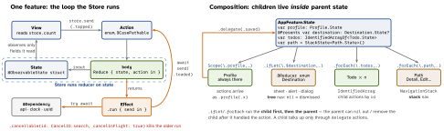

design · folio
In one line: Point-Free’s library for unidirectional Swift apps: a feature is a
@Reducer — value-type State, an Action enum, a body that mutates
state and returns Effects; a Store runs it; features compose by embedding
child state/actions; the outside world comes in through @Dependency;
TestStore proves every step. Current 1.26.2 (2026-08-28).
Download PDF Print view LaTeX source


How it works
@Reducer: nestedState(@ObservableState= Observation for structs),Action(made@CasePathable→\.loaded),body: some ReducerOf<Self>.- Store:
Store(initialState: F.State()) { F() }; view:let store: StoreOf<F>·store.x·store.send(.a)·store.scope(.\.kid, action:\.kid) - Effects:
.none·.send(.a)·.run { send in }·.merge·.cancellable(id:cancelInFlight:)·.cancel(id:). - Dependencies:
@DependencyClientstruct of closures +DependencyKey(liveValue,testValue,previewValue); read@Dependency(; override with\.api)withDependencies. An unset dependency called in a test fails it. - Tree nav:
@Presents var destination+PresentationAction<…>+.ifLet(; view\.$destination, action:\.destination).sheet(item: $store.scope(…)); child closes with@Dependency(.\.dismiss) - Stack nav:
StackState<Path.State>+StackActionOf<Path>+.forEach(;\.path, action:\.path)NavigationStack(path: $store.scope(…)). Deep link = construct the state. - Bindings:
@Bindable var store+BindableAction/BindingReducer()→$store.name; or$store.name.sending(.\.nameChanged) @Shared(swift-sharing):.appStorage("k"),.fileStorage(url),.inMemory("k"); write via$x.withLock { $0 += 1 }(+=is not atomic).- 1.25–1.26: trait
ComposableArchitecture2Deprecationsflags 2.0-bound APIs (BindingViewStore,Effect.map); 1.26:Scope(.\.kid, action:)
Worth it?
Pays: big team wanting one shape; navigation/deep links as state; many cancellable effects; exhaustive tests. Costs: learning curve, boilerplate, compile time (macros + swift-syntax, deep generic reducers), lock-in + migrations (2.0), every high-frequency event (scroll, drag) walks the reducer tree.
Remember
State in the struct, effects in .run, the world in @Dependency;
scope down, delegate up.
Example — debounced search + its test
@Reducer struct Search {
@ObservableState struct State: Equatable {
var query = ""; var results: [Item] = [] }
enum Action { case queryChanged(String), loaded([Item]) }
enum CancelID { case search }
@Dependency(\.api) var api
@Dependency(\.continuousClock) var clock
var body: some ReducerOf<Self> {
Reduce { state, action in
switch action {
case let .queryChanged(q):
state.query = q
return .run { send in
try await clock.sleep(for: .milliseconds(300))
await send(.loaded(try await api.search(q)))
}.cancellable(id: CancelID.search, cancelInFlight: true)
case let .loaded(items):
state.results = items; return .none
} } } }
// test - exhaustive by default: every change asserted
let clock = TestClock()
let store = TestStore(initialState: Search.State()) { Search() }
withDependencies: { $0.continuousClock = clock
$0.api.search = { _ in [.mock] } }
await store.send(.queryChanged("sw")) { $0.query = "sw" }
await clock.advance(by: .milliseconds(300))
await store.receive(\.loaded) { $0.results = [.mock] }Unasserted change, unreceived action or a still-running effect ⇒
failure. store.exhaustivity = .off = assert only what matters (big integration flows).
Traps
Task {}/ a singleton insideReduce— untestable, uncancellable. Return.run; reach the world via@Dependency.- Search without
cancelInFlight— a slow old response overwrites a newer one. - Sharing logic by sending actions — each hop re-runs the reducer tree; call a helper and return one effect.
- Parent matching a child’s internal actions — listen to
.delegateonly.